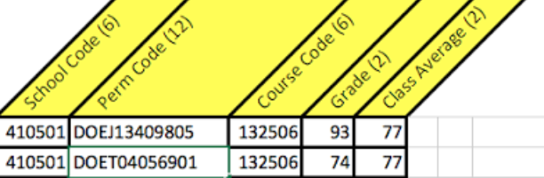

Applying to CEGEP
Please note that the pages in this section contain general guidelines, and that following them does not guarantee any outcomes, including but not limited to successful completion of an application, successful submission of an application, admission to a college, etc.
Applying to CEGEP is an exciting but perhaps stressful occasion for all students. It can be tricky to decide what programs to apply to at various colleges, figuring out what documents you need and what fees to pay. Then on top of all that, most CEGEPs use different application modules, which means a different application process for nearly every CEGEP!
In the Applying to CEGEP section, we’ll cover everything you need to know: we’ll look at the steps of numerous application processes using different modules, provide some tips and resources, remind you of important dates and deadlines, and more. This specific page will focus on CEGEP admissions and how applications are evaluated.
If you’re a high school student, you’ll want to apply for the Fall semester in the Day Division (regular day programs), which is exactly what this section will go over. Here’s a rough outline of what an application process typically involves:
- Choose some programs of interest
- Find which CEGEPs offer your programs of interest, learn about their school community, resources, finances, etc.
- Fall and/or Winter: Visit CEGEPs for open houses and/or information sessions (virtual or in-person) and get to know the
colleges more
- You can also sign up for Student-for-a-Day, which allows you to visit several college classes, meet some faculty, and get a feel of what it’s like to be a student at a CEGEP.
- When application modules open (January for the Fall semester): begin college applications
- Keep track of deadlines (March 1 application deadline for Fall semester)
- Complete and submit applications: ensure all necessary documents were sent in, then wait for results
Want to learn more about CEGEP and CEGEP programs before learning how to apply?
Want to find out how to apply to various CEGEPs straight away? Skip to Application Systems.
CEGEP Admissions
There's often a lot of confusion surrounding CEGEP admissions. When they evaluate your application, what do the admissions teams actually look at? What are the grades they care about most?
Disclaimer: This section does not describe the exact process taken by any CEGEP admissions team and is meant to give a general idea of how you may be evaluated in comparison to other applicants.
Secondary 4 Results
As you may already know, CEGEPs only look at your secondary 4 and 5 credits and grades. Core courses, especially those with ministerial exams, are weighted more heavily (more details on this later). In normal circumstances, secondary 4 math, science and history courses would be given greater importance/weight.
For the 2020–21 school year (secondary 4 for this year’s cohort), there were two high school terms. Term 1 was worth 35%, and term 2 was worth 65% (a change may have been made, modifying the weighting to 40% and 60% instead).
Secondary 5 Results
Since secondary 5 students apply to CEGEP before they’ve completed the school year, CEGEPs will first consider term 1 grades upon receiving applications; term 2 grades will then be verified after the end of the school year (more on this in Conditional Acceptance). Core courses, especially those with ministerial exams (English and French), are weighted more heavily. For the 2021–22 school year, term weighting was confirmed as 40% for term 1 and 60% for term 2 (may be subject to change)
Evaluating Applications
The information presented on this part of the page is largely based on Loyola High School’s presentation on 2020 CEGEP Applications, which can be found here: https://loyola.ca/images/articlemedia/students/2019-2020/2020_-_CEGEP_Applications__Parent.pdf
What CEGEPs see
CEGEPs consider students’ grades and compare them to the class/group average. For most programs, your grades will also be compared to cutoffs (minimum required averages and grades, vary based on program). Below is an image depicting what admissions teams see:
The permanent code is a unique identifier assigned to each Quebec student, consisting of a 12 character code that is found on report cards and achievement records. The course code is a 6 character code representing a course, such as 132506 for Français langue seconde, enrichi.
SRAM: Vanier, John Abbott, Champlain Lennoxville, Heritage
SRAM stands for Service régional d'admission du Montréal métropolitain, and students can apply to several CEGEPs through SRAM. See Application Systems for more details.

Brandmark © SRAM
SRAM-affiliated CEGEPs use ranking lists when evaluating applications to determine the eligibility of applicants, to compare them to one another, and to select the best-suited candidates for limited enrolment programs. SRAM rankings are determined based on the following:
- All secondary 4 and 5 grades: an overall average is calculated based on credit weight (the number of credits of a course determines its weight in the average)
- Average deviations: the student's grade in comparison to the group average for each course
- Optional courses: bonuses are given to students who pass optional courses Secondary V TS/SN Math, Chemistry, or Physics
- Core subjects and "heavy subjects" (subjects related to your CEGEP program):
- When applying to English-language CEGEPs, English is always a “heavy subject”, meaning it is given greater importance
- Core subjects typically refer to courses with ministerial exams
- Subjects related to a Science program would include all Science and Math courses: TS/SN Math, Science and Technology, Environmental Science and Technology, Physics, Chemistry, etc.
- Number of credits: all high school applicants graduate with a minimum of 54 credits, but some will obtain a higher number. A bonus is given to students who hold between 64 and 88 high school credits
Dawson College

Brandmark © Dawson College
For Science programs, the following courses are included in the Overall Science Average:
- All secondary 4 and 5 English courses
- All secondary 4 and 5 French courses
- All secondary 4 and 5 Math courses
- All secondary 4 Science and Technology courses (ST, EST, etc.)
- All Physics, Chemistry, and Biology courses
- All secondary 4 History courses
- All secondary 4 Art courses
- All secondary 5 Ethics and Religious Culture (ERC) courses
For Social Science and Liberal Arts programs, the following courses are included in the Overall Arts Average:
- All secondary 4 and 5 English courses
- All secondary 4 and 5 French courses
- All secondary 4 and 5 Math courses
- All secondary 4 Science and Technology courses (ST, EST, etc.)
- All Economics, Geography, and History courses
- All secondary 4 History courses
- All secondary 4 Art courses
- All secondary 5 Ethics and Religious Culture (ERC) courses
For all other programs, such as ALC (Arts, Literature and Communication), Visual Arts, and technical programs, the following courses are included in the Overall Obligatory Average:
- All secondary 4 and 5 English courses
- All secondary 4 and 5 French courses
- All secondary 4 and 5 Math courses
- All secondary 4 Science and Technology courses (ST, EST, etc.)
- All secondary 4 History courses
- All secondary 4 Art courses
- All secondary 5 Ethics and Religious Culture (ERC) courses
Marianopolis College
Brandmark and crest images © Marianopolis College
Marianopolis considers several types of averages and rankings for admissions:
- Overall average: average of all secondary 4 and 5 credit courses a student has taken (diploma requirements + additional courses)
- Compulsory average: average of all courses part of the Quebec Secondary School diploma requirements
- Program average: average of grades obtained in specific classes related to the program to which a student is applying
- Science average: all secondary 4 and 5 Science and Math courses
- Social Science average: overall average from which Science and Math courses are removed (except for the Commerce profile)
- Commerce average: a math average is calculated
- SRAM rankings (see above)
- 2% bonus for students following the International Baccalaureate Middle Years Programme (IB-MYP)
Conditional Acceptance
CEGEPs look at all of your secondary 4 and 5 grades, including the final term of secondary 5 (typically the third term in normal circumstances, but in recent years it has been the second term). But how exactly does this work if you don’t even have those marks when you submit your applications?
Once you get accepted at a CEGEP, you’re offered a spot under something called conditional acceptance. Conditional acceptance means that there are still requirements, or conditions, that you must fulfill by the end of the school year for your acceptance to be finalized. In other words, your final high school grades must also meet the requirements and you must complete all of your college program prerequisites in order to keep your spot at a CEGEP.
(You can learn more about this in After applying.)
Sources: SRAM FAQ, Loyola High School — 2020 CEGEP Applications, documents from various high schools, notes from previous CEGEP information sessions